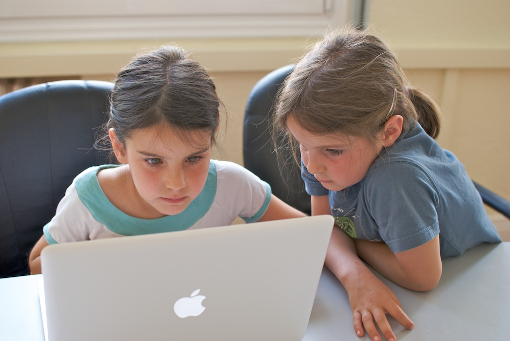

Pairing & FeedbackNov 9th
 Photo credit: therefromhere / Foter / CC BY-NC-SA
Pairing
Pairing to me was something completely new. I had no idea how to go about getting work done with another partner, when to code, when to interrupt or try to switch gears, how to navigate the social cues, and most of all, how to be effective at this type of collaboration. It was all a mystery how this would all go down until I got to my first pairing session.
After experiencing my first pairing session, all those worries went away. With determining clear roles in the beginning and establishing expectations, it was more apparent what each of us were supposed to do. Placing ourselves in roles took a tremendous amount of uncertainty out of the equation, as we can focus on the task at hand. I felt some doubt, however, about how rigid we should be staying in these roles. I felt that in certain situations, it would be wise to naturally switch between navigator/driver roles. There were instances where having someone else show me by typing in code while I was driving was more beneficial, and vice versa. One of the best pairing sessions I've had, in fact, was when this role switching happened very organically. It was rewarding to see the other partner not being afraid to challenge my ideas and for us to think critically to solve problems.
The most rewarding part of pairing is when you are exposed to new ideas or ways of thinking. I feel like this is the most beneficial part of working with others - being exposed to how their mind works. I have had several sessions where we reviews our own solutions to problems that looked quite different. These are the most fun and exciting situations because I can expose myself to new patterns of thought. Different solutions. Different algorithms. Different people.
Despite all of these benefits, it doesn't come without a cost. Pairing can sometimes take longer to solve certain problems. Any number of things can go wrong which impede your progress. Communication can be an obstacle if you have a hard time articulating your thoughts. English might not be that person's native language which can also add to this issue. Technical issues with the microphone, webcam, or network are not that uncommon. Adapting through these possible issues and finding a way to work is paramount to success.
Feedback
While reading my feedback, I tried to remind myself that the purpose of this was to become more aware of how I am working when pairing. I felt that these were honest and specific enough to give me a good idea of where I am and how I can improve. Some of the things I paid particular attention to were sticking to the navigator/driver roles, communicating while I am driving, and to work on preparing before going into a specific challenge. I remember my first session where I felt a little lost, and had to rely more on my partner to direct. I'm glad we have a system that encourages actionable feedback so we can look at these to improve in the future.
Writing feedback allowed me to reflect on how the session went, and also gave me an opportunity to be introspective and examine how I did. I use the opportunity when writing feedback to others to think about things that can be done to make pairing sessions go more smoothly. When writing them, I just hope that the recipients also take it as an opportunity to improve and to recognize what they are doing well. Sometimes, it is difficult to write actionable feedback when things seem to go too well.
I think the pairing and feedback system work to forge more self aware and empathetic programming partners. Working with others is going to be a crucial part of our careers, and might as well take this opportunity to analyze and improve on this aspect as much as we can.